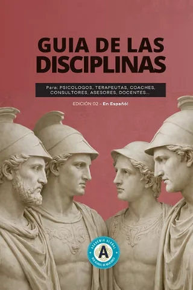
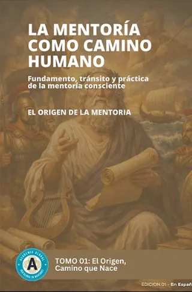

Qué es y qué no es la mentoría
Claves para diferenciarla con precisión de otras disciplinas de acompañamiento.
Este recorrido te ofrece los primeros conceptos para comprender la mentoría como disciplina profesional.
Formación virtual asincrónica gratuita, a tu propio ritmo.
Claves para diferenciarla con precisión de otras disciplinas de acompañamiento.
Presentada de manera simple y didáctica.
Sobre las particularidades que distinguen su ejercicio: procesos reflexivos, expansión de la consciencia, empatía, humildad y cocreación.
Una introducción a la Arquitectura Doctrinal de la Mentoría y a las Metacompetencias del Mentor.
Es un recorrido introductorio: no busca formarte como mentor, sino darte las primeras claves para conocer la disciplina.
Formarte como mentor es un privilegio. Te invita a transitar procesos reflexivos sobre tu propia historia, expandir tu consciencia y fortalecer tu integridad como persona.Certificarte como mentor/a es una responsabilidad. Te habilita a ejercer profesionalmente el acompañamiento mentoral con la credibilidad y el respaldo de una Academia Internacional.
Conocer el territorio de cada disciplina es el primer paso para ejercer con claridad.

En este video encontrarás conceptos fundamentales que sustentan la visión de la Academia Global RGM sobre la mentoría. Asístelos con atención y reflexiona su contenido: seguramente te hará mucho sentido.

Un mapa en dos pilares: el Camino del Mentor (cómo la propia vida se transforma en sabiduría transferible) y el Ciclo de Intervención Mentoral (la lógica del acompañamiento). En una hora de lectura queda claro qué distingue mentorear de simplemente aconsejar.

No lo que el mentor sabe, sino qué calidad de ser humano necesita ser: presencia, discernimiento, conversación, responsabilidad y trascendencia. Cinco dominios que ordenan las 15 capacidades madre del mentor contemporáneo.
Ideales para compartir con Centros y Mentores Docentes como base común de criterio.
Para que descubras «cómo nace la mentoría».

Estos contenidos forman parte de nuestra formación virtual asincrónica, que te lleva a aprender cómo ejercer la disciplina de la mentoría con un nivel profesional. Formarse y certificarse aporta respaldo, credibilidad y garantiza el profesionalismo de tu accionar como mentor, distinguiéndote dentro y fuera de la organización.
«Quien acompaña a otros con rigor empieza por acompañarse a sí mismo.»
Si deseas transitar el camino, completa este formulario y te obsequiaremos un código de descuento especial.
Beneficios de estar certificado/a como Professional Mentor o Expert Mentor: figurar en la galería de mentores certificados.
La Academia Global RGM realiza encuentros gratuitos semanalmente. Tienes la posibilidad de participar en encuentros virtuales para realizar consultas y socializar con otros mentores que se encuentran atravesando este proceso.